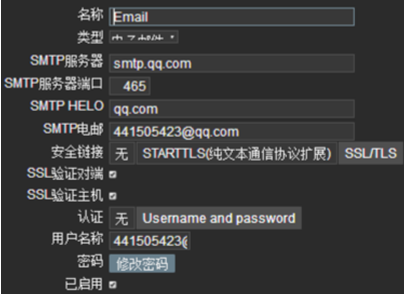

zabbix-agent端的配置
http://blog.chinaunix.net/uid-29155617-id-4668602.html # agent配置说明
https://www.cnblogs.com/saneri/p/7883275.html # 自动发现
识别监控对象
理解监控对象
细分监控对象的指标
确定监控的基准线
预中级
工具化的监控分离
监控对象的分类
1、硬件2、系统3、服务4、日志5、网络6、APM应用性能
zabbix语言乱码问题
find / -name *font* -print |grep zabbix
ll `find / -name *font* -print |grep zabbix`
/usr/share/fonts/dejavu/DejaVuSans.ttf #这个文件控制字体的
在win下找一个ttf的字体文件替换掉DejaVuSans.ttf就行了 注意备份
https://www.cnblogs.com/cloudos/p/8297856.html
https://www.cnblogs.com/likehua/p/3968689.html
linux下agent配置
https://www.cnblogs.com/liang-wei/p/5848923.html
vi /etc/zabbix/zabbix_agentd.conf
Server=192.168.21.70 #zabbix服务端IP被动模式
ServerActive=192.168.21.70 #zabbix服务端IP主动模式
Hostname=192.168.21.60 #自己的地址
win下agent配置监控
LogFile=c:\zabbix_agentd.log
Server=192.168.21.70
Hostname=192.168.21.60
ServerActive=192.168.21.70
cmd下注册服务
-i --install
-d --uninstall
-s --start
-x --stop
-h --htlp
-V --version
c:\zabbix\bin\win64\zabbix_agentd.exe -c
c:\zabbix\conf\zabbix_agentd.win.conf -i
启动命令如下：
c:\zabbix\bin\win64\zabbix_agentd.exe -c
c:\zabbix\conf\zabbix_agentd.win.conf -s
删除服务重新注册
c:\zabbix\bin\win64\zabbix_agentd.exe -d -c
c:\zabbix\conf\zabbix_agentd.win.conf
用户自定义监控项和模板制作
服务端安装检测工具
yum install zabbix-get
agent配置文件
vi /etc/zabbix/zabbix_agentd.conf
# UserParameter=
UserParameter=login-user,uptime | awk -F ' ' ' {print $5}' #login-user唯一
自定义监控模板位置
/etc/zabbix/zabbix_agentd.d/
[root\@node1 zabbix_agentd.d]# cat TCP_status.conf
UserParameter=TCP_status[*],netstat -ant |grep -c $1
/etc/init.d/zabbix-agent restart
[root\@linux7 ~]# zabbix_get -s 10.1.21.32 -k TCP_status[LISTEN]
8
测试
上述添加完毕就在web界面主机添加自定义的监控项
键值则为UserParameter=TCP_status[*]里面的例如TCP_status[LISTEN]
从而制作模板
邮件报警

配置邮件服务-用户邮箱地址-主机-监控项-触发器-动作-测试
告警内容
- {ITEM.NAME1} ({HOST.NAME1}:{ITEM.KEY1}): {ITEM.VALUE1}
- {ITEM.NAME2} ({HOST.NAME2}:{ITEM.KEY2}): {ITEM.VALUE2}
日期：{DATE}-{TIME}
主机：{HOST.NAME}
自定义报警脚本
AlertScriptsPath=/usr/lib/zabbix/alertscripts #默认脚本路径，放在该位置就可以
然后再报警媒介类型 调用
需要在 报警媒介类型 用户 动作调用 才能成功完成报警
立即刷新让重新加载
[root\@linux7 ~]# zabbix_server -R config_cache_reload
zabbix_server [4114]: command sent successfully
zabbix监控web监控url
监控天气
curl http://www.weather.com.cn/data/sk/101010100.html 2>/dev/null |python -m
json.tool
监控mysql
[root\@node1 ~]# vim /etc/zabbix/zabbix_agentd.d/userparameter_mysql.conf
#自带的监控格式参考
带密码监控 把密码写入配置文件中
UserParameter=mysql.ping,HOME=/var/lib/zabbix mysqladmin -uzabbix -pqwe123 ping
| grep -c alive
UserParameter=mysql.version,mysql -V
变量带密码监控用于多数据库
UserParameter=mysql.status[*],echo "show global status where
Variable_name='$1';" | HOME=/var/lib/zabbix mysql -u$2 -p$3 -N | awk
'{print $$2}' #用变量表示 $1被用
UserParameter=mysql.ping[*],HOME=/var/lib/zabbix mysqladmin -u$2 -p$3 ping |
grep -c alive
测试
zabbix_get -s 10.1.21.32 -k mysql.status[zabbix,qwe123,Uptime]
4210
修改模板“宏”
MySQL status 触发器 1 mysql.ping[{$USER},{$PASSWD}]
MySQL uptime mysql.status[{$USER},{$PASSWD},Uptime]
# 通过percona监控MySQL
https://www.cnblogs.com/wsl222000/p/5520081.html
https://blog.csdn.net/qq_31613055/article/details/78781752
/var/lib/zabbix/percona/templates #percona下的mysql模板目录
在zabbix客户端安装mysql监控插件rpm包
rpm -ivh
https://www.percona.com/downloads/percona-monitoring-plugins/1.1.6/percona-zabbix-templates-1.1.6-1.noarch.rpm
cd /var/lib/zabbix/percona/templates
在zabbix监控页面中导入此模板文件zbx_percona_mysql_template.xml
cp userparameter_percona_mysql.conf
/usr/local/zabbix/etc/zabbix_agentd.conf.d/ #(具体路径根据实际情况而定)
修改MySQL的执行命令文件 /var/lib/zabbix/percona/scripts/get_mysql_stats_wrapper.sh
RES=`HOME=~zabbix /usr/bin/mysql -uUSER -pPASS -e 'SHOW SLAVE STATUS\G' |
egrep '(Slave_IO_Running|Slave_SQL_Running):' | awk -F: '{print $2}' | tr
'\n' ','`
修改
/var/lib/zabbix/percona/scripts/ss_get_mysql_stats.php文件，换成自己MySQL的用户名和密码
$mysql_user = 'USER';
$mysql_pass = 'PASS';
重启zabbix-agent，在server上zabbix_get -s 10.1.21.32 -k MySQL.Open-files测试一下
监控nginx
zabbix2.0升级到3.0
模板不兼容升级2.2到3.0，模板就跟着升级，然后再导出便是3.0的模板了
修改yum源
yum list |grep zabbix #查看包
yum install zabbix-server-mysql zabbix-web-mysql -y
自动发现
[root\@node2 ~]# cat /etc/zabbix/zabbix_agentd.conf |grep "\^[a-Z]"
PidFile=/var/run/zabbix/zabbix_agentd.pid
LogFile=/var/log/zabbix/zabbix_agentd.log
LogFileSize=0
Server=10.1.21.20
ServerActive=10.1.21.20
HostnameItem=system.hostname
Include=/etc/zabbix/zabbix_agentd.d/*.conf
直接在zabbix server端的/etc/hosts文件里添加客户端主机名和IP。
这样获取到的主机名就是你定义的主机名了，而不是ip地址的。
自动注册
配置
ServerActive=10.0.0.1
如果你没有在zabbix_agentd.conf中特别定义了Hostname，则服务器将使用agent的系统主机名命名主机。Linux中的系统主机名可以通过运行'hostname'命令获得。
修改配置后重启agent
在Zabbix页面，转到配置→动作，选择自动注册为事件源，然后单击创建操作：
在“动作“选项卡，定义 Action 名称
可选指定条件。如果要使用“主机元数据”条件，请参阅下一节。
在“操作”选项卡中，添加“添加主机”，“添加到主机组”（例如，发现的主机），“链接到模板”等。
zabbix-agent脚本配置
#!/bin/sh
cd /opt
groupadd zabbix -g 201
useradd -g zabbix -u 201 -m zabbix
tar -zxf zabbix-2.2.2.tar.gz
cd zabbix-2.2.2
./configure --prefix=/usr/local/zabbix --sysconfdir=/etc/zabbix --enable-agent
make
make install
mkdir /var/log/zabbix
chown zabbix.zabbix /var/log/zabbix
cp misc/init.d/fedora/core/zabbix_agentd /etc/init.d/
chmod 755 /etc/init.d/zabbix_agentd
cp /etc/zabbix/zabbix_agentd.conf /etc/zabbix/zabbix_agentd.conf.bak
cd /etc/zabbix/ && rm -f zabbix_agentd.conf
cp /opt/zabbix_agentd.conf .
/bin/sed -i s/temp_hostname/`/bin/hostname`/g /etc/zabbix/zabbix_agentd.conf
/bin/sed -i "s#BASEDIR=/usr/local#BASEDIR=/usr/local/zabbix#g"
/etc/init.d/zabbix_agentd
chkconfig zabbix_agentd on
service zabbix_agentd restart